Chapeaux en fourrure
Chapeaux en fourrure recyclée et cuir, créations artisanales québécoises de Les Fourrures Boréales. Créations artisanales de Lucie — Les Fourrures Boréales.
Toute la boutique · Articles en fourrure sur mesure
-
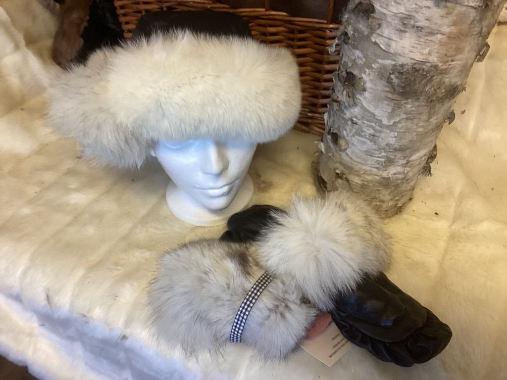
Chapeau fille 8-10 ans — renard N° 208 · Chapeaux en fourrure -
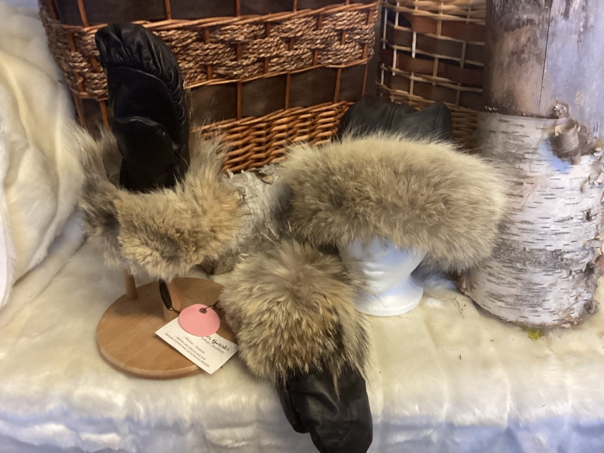
Chapeau dame M — coyote N° 202 · Chapeaux en fourrure -
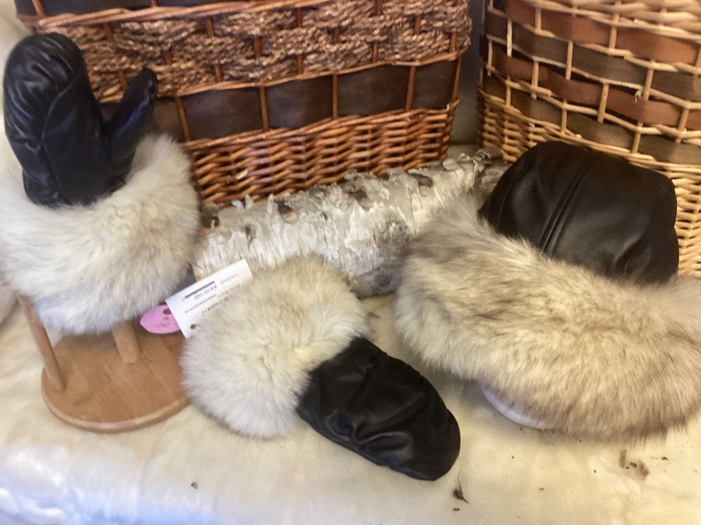
Chapeau dame M — fourrure recyclée N° 203 · Chapeaux en fourrure -
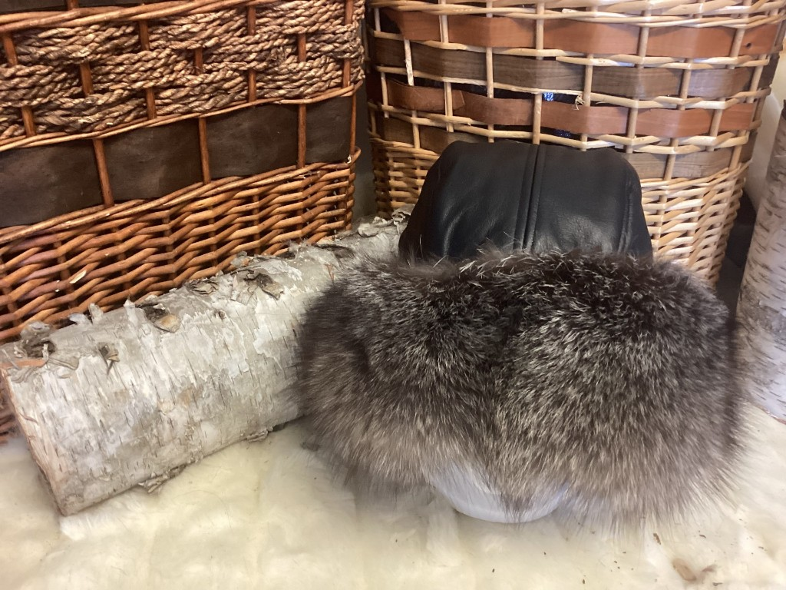
Chapeau dame M — renard argenté N° 204 · Chapeaux en fourrure -
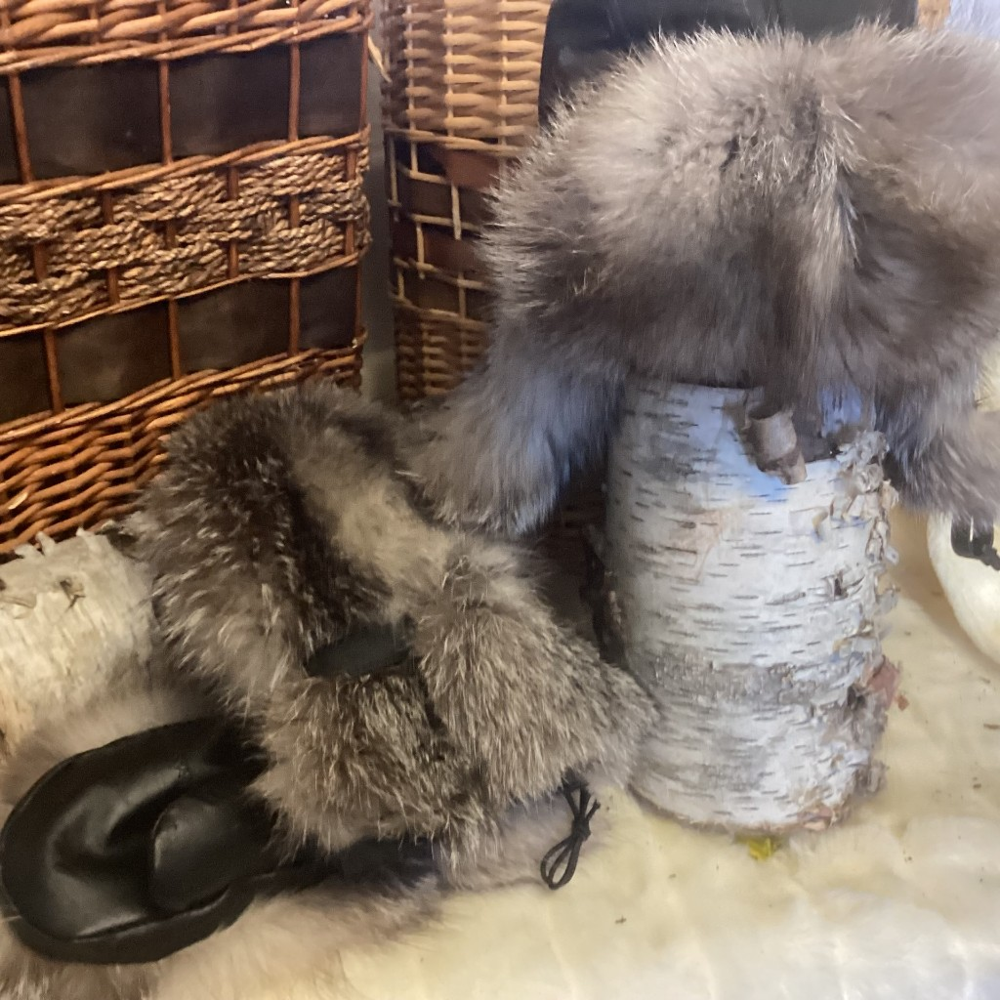
Chapeau dame M — renard norvégien N° 205 · Chapeaux en fourrure -
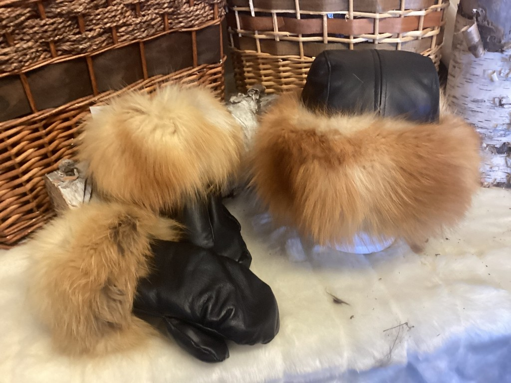
Chapeau dame M — renard roux N° 206 · Chapeaux en fourrure -
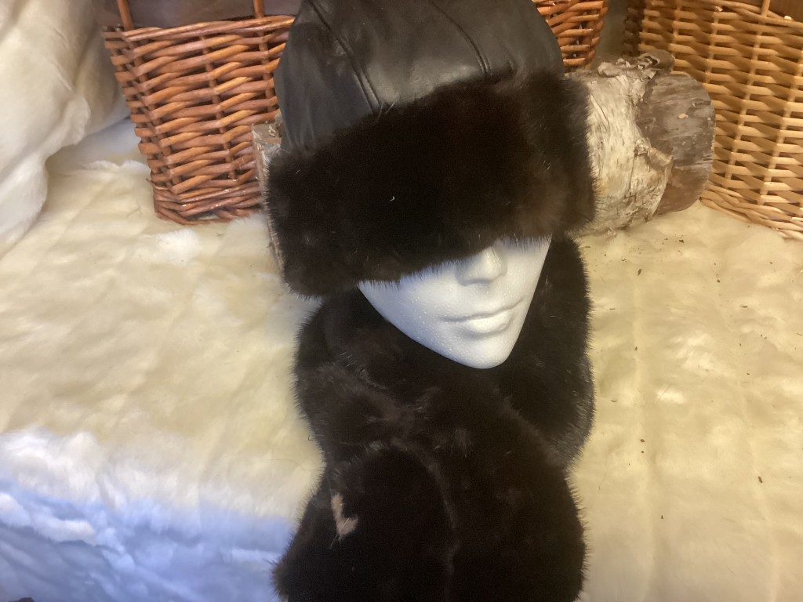
Chapeau dame M — vison N° 207 · Chapeaux en fourrure -
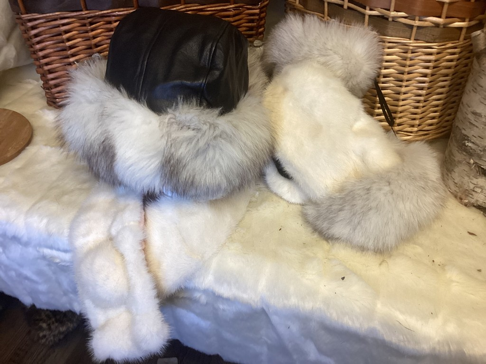
Chapeau dame M — renard N° 201 · Chapeaux en fourrure -
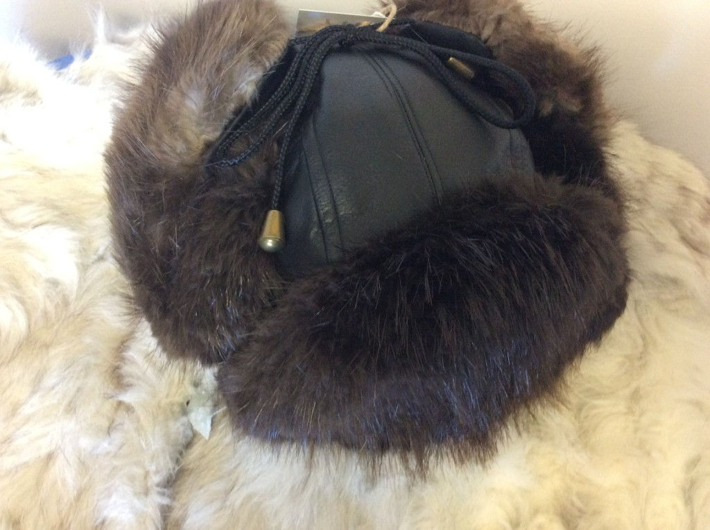
Chapeau homme M — castor N° 210 · Chapeaux en fourrure -
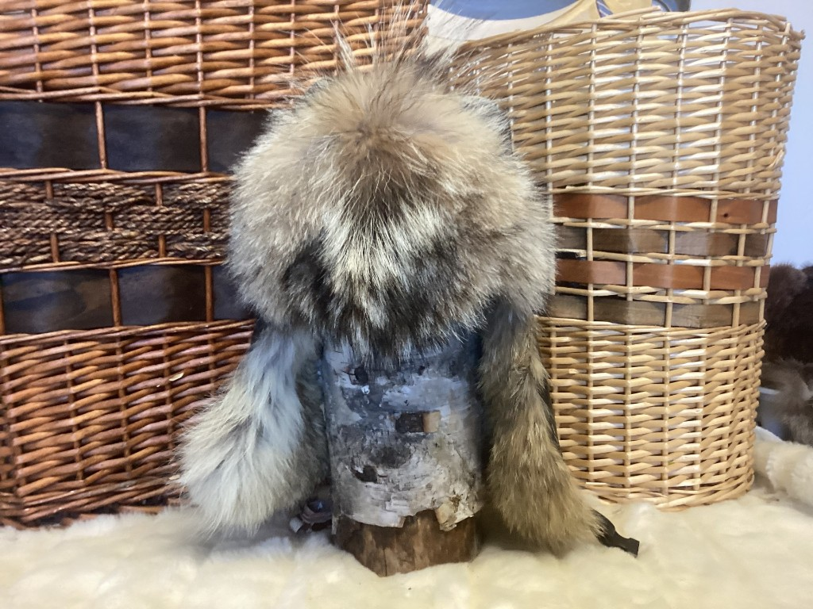
Chapeau homme M-L — coyote N° 211 · Chapeaux en fourrure -
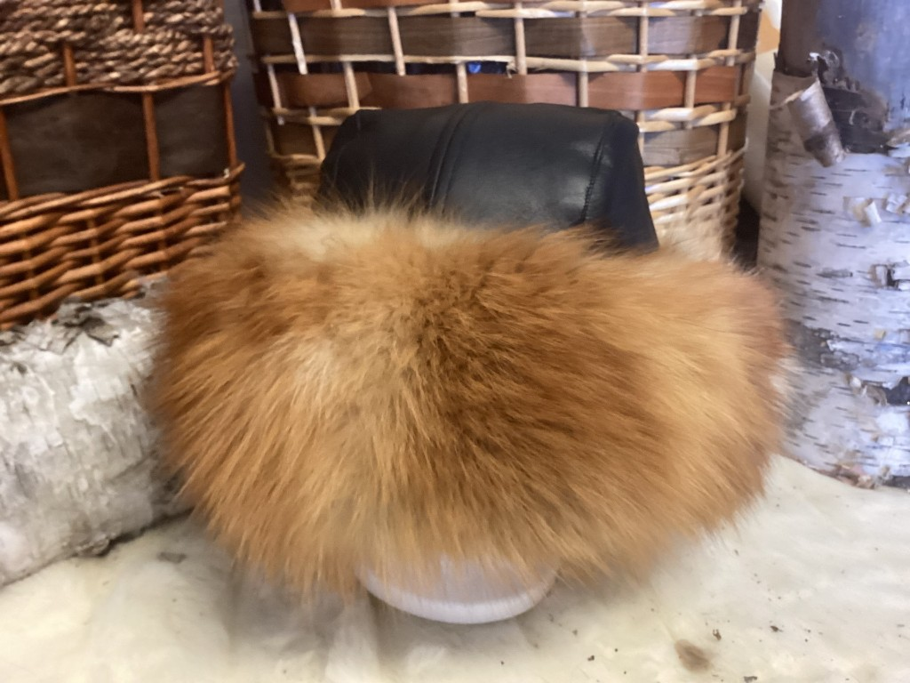
Chapeau dame M — renard roux N° 213 · Chapeaux en fourrure -
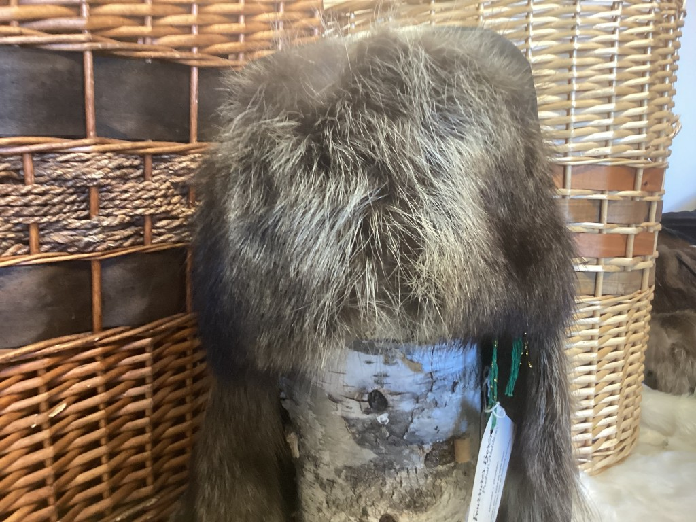
Chapeau homme XL — raton N° 209 · Chapeaux en fourrure -
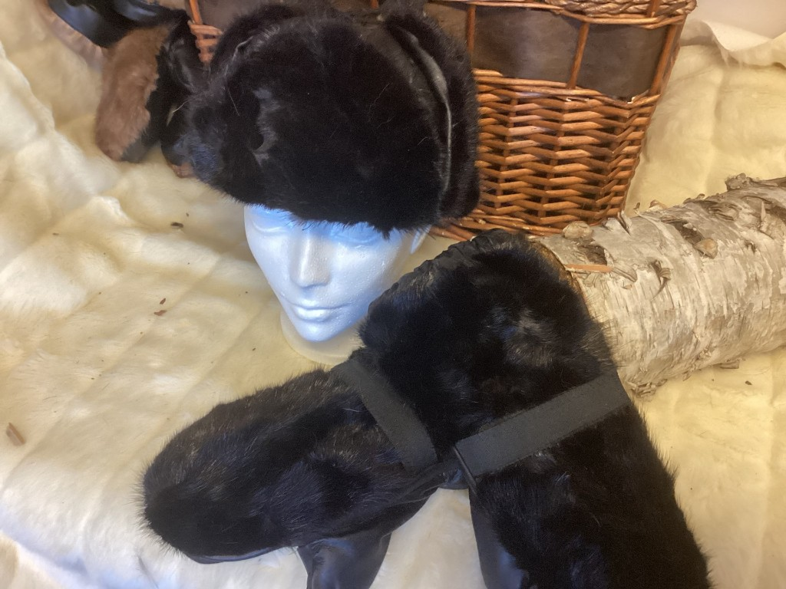
Chapeau enfant 8-12 ans — vison recyclée N° 200 · Chapeaux en fourrure